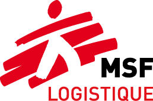

EN FR 2014 OCP Réclamation Claim form MSF Log

Association à but non lucratif
Non profit organisation
Fiche de réclamation
Claim form
Vous avez constaté un problème lors de la réception d’une commande gérée par MSF Logistique (colis manquant, endommagé, erreur quantité, rupture de chaîne de froid, indicateur "colis fragile" en statut alarme, etc.) ou vous avez des remarques concernant le déroulement de votre commande (fiabilité des informations, respect des engagements, etc.).
Vous avez des commentaires concernant la qualité des articles, services ou outils informatiques MSF Logistique.
Merci de contacter votre interlocuteur (trice) du secteur opération de MSF Logistique en utilisant ce formulaire.
You have come across a problem concerning an order received (missing or damaged parcel, items quantity non conform, break in the cold chain, shocks or reversal indicators of parcel "fragile" in alarm position, etc.) or you have remarks regarding the processing of your order (reliability of information, etc.).
You have comments concerning the quality of items, services or software tools provided by MSF Logistique.
Contact your MSF Logistique Operation representative using this form.
Emetteur (nom/fonction/mission) |
Date |
Réf. packing-list MSF Logistique |
Réf. cargo-manifest MSF Logistique |
Description du(des) problème(s) / Problem description :
En cas d’avarie de transport, précisez la date, le lieu de prise en charge du fret ainsi que l'intermédiaire (douane, transitaire, etc.) vous ayant remis les colis en dernier lieu.
Joignez à votre réclamation, tous les documents nécessaires (bordereau de livraison annoté, lettre de réserve, photos …) qui nous permettront le cas échéant de contacter notre assureur pour une prise en charge financière des dommages ; pour plus de détail consulter le site internet http://www.msflogistique.org/ (page « Infos Générales » / « Info approvisionnement » / « Réclamations »).
Pour les problèmes de rupture de chaîne de froid, nous transmettre toutes les informations affichées sur les indicateurs Freeze-tag®, carte "3M®", ainsi que les relevés de température des enregistreurs LogTag® intérieurs et extérieurs à chaque colis concerné.
In case of a dispute at reception, indicate the date, place and contact (forwarding agent, custom administration, etc.) who delivered the freight to you. Send us all the documents (delivery note with comments, reserve letter, photos …) so we can possibly make a request for damage reimbursement to our insurance company ; for further explanation consult our Website http://www.msflogistique.org/ (page « General Info » / « Supply Info » / « Complaints »).
In case of a break in the cold chain, please send us the information from each Freeze-tag® and "3M®" cards as well as the data recorded by the interior and exterior LogTag®.
Souhaitez-vous un remplacement des produits confirmés perdus ou inutilisables ? oui non
Do you want a replacement of the products confirmed lost or unusable ? yes no
Pour une situation où il n’apparaît finalement pas utile de remplacer les produits, votre réclamation pourra être directement soldée par un avoir financier. For a situation where there is no need to replace the products, your claim can be directly resolved by a credit note.